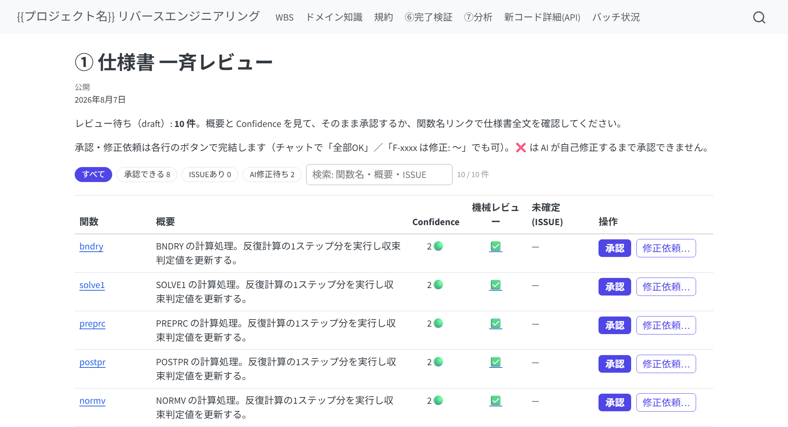
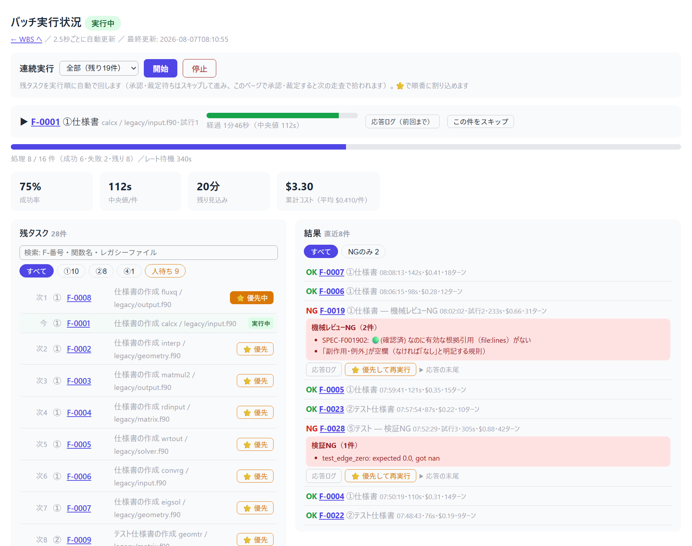

操作ガイド
legacy-reverse
⓪から⑦まで進めながら覚える
レガシーコード（Fortran / C 等）を Python へ仕様ベースで移植するパイプライン。
このスライドは実際に1関数を進める順番どおりに、あなたの操作だけを説明する。
→ キーで次へ / ← で戻る / 右上「一覧表示」で通し読み
全体像 — あなたの仕事は4つだけ
⓪ 解析関数リスト
→
① 仕様書人がOK
→
② テスト仕様人が承認
→
③ テストコード
→
④ 実装
→
⑤ テスト突き合わせ
…全関数が終わったら → ⑥ 完了検証 → ⑦ 分析・改善
| あなたの仕事 | 具体的には |
|---|
| トリガを引く | フェーズを起動する（チャットのコマンド、または画面のボタン） |
| 質問に答える | ISSUE（仮説＋Yes/No形式）に回答する |
| 承認する | ①の仕様書・②のテスト仕様に OK を出す |
| 裁定する | ⑤でテストが落ちたとき原因の種類を決める |
役割分担: AIが書く、機械（スクリプト）が検証する、人が決める。
コードや文書をあなたが直接書く必要は基本ない。
4つとも、チャットでもブラウザでもできる。
前提: レガシーを動かせる環境は無くてよい。
「レガシーを実行して出力を突き合わせる」方式ではありません。正しさは
(1) 人が仕様書をレビューして確定することと、
(2) その仕様書だけから独立に作ったテストと実装が⑤で一致することで担保します。
つまり最終品質の上限は①のレビュー品質です。
セットアップ① — 用意するものと skill の配置
| 必要なもの | 確認 |
|---|
| Claude Code の CLI が PATH に | claude --version（ボタン実行も無人バッチも裏でこれを呼ぶ） |
| Python 3.10 以上 | python --version |
| 移植先が git 管理下 | git status |
skill のコピー（cwd は skills リポジトリの中）:
cd <skills> # このリポジトリを clone した場所
cp -r legacy-reverse <project>/.claude/skills/
cp -r legacy-reverse/skills/* <project>/.claude/skills/
2行必要です。1行目が skill 本体一式、2行目はフェーズ別 skill を
.claude/skills/ の直下にも置くため（Claude Code はここを見て
/legacy-1-spec を認識する）。中身が重複しますが、これで正しい状態です。
以降このスライドでは <LR> =
<project>/.claude/skills/legacy-reverse（コピー先）を指します。
コマンドは断りがなければ <project> の中で実行します。
セットアップ② — hook・MCP・ツール類
1. hook を登録（必須） —
<LR>/hooks/settings-example.json の内容を
<project>/.claude/settings.json へマージ。2本入っています:
guard_tests.py — 「AIがテストを書き換えて通す」事故を防ぐguard_json.py — 「AIが関数リスト(JSON)を壊してバッチが止まる」事故を防ぐ
2. MCP サーバを登録（推奨） — MCP は AI に外部プログラムを「道具」として
渡す仕組み。登録すると実行のたびに出る許可ダイアログが減り、失敗も減ります
（未登録でも動作は同じ）。<project>/.mcp.json を作って:
{
"mcpServers": {
"legacy-reverse": {
"command": "python",
"args": ["C:/work_space/skills/mcp-servers/legacy-reverse-mcp/server.py"]
}
}
}
パスは <skills> の絶対パスに置き換えてください
（上は例）。ここだけコピー先ではなく元のリポジトリを指すので、
セットアップ後もリポジトリを消さないでください。
3. ツール類 — Quarto（進捗サイトの生成に必要。
quarto.org のインストーラで入れる。quarto --version が通ればOK）と
pip install pytest sphinx sphinx-rtd-theme。
管理者権限を使いたくなければ
python <skills>/quarto-typst-pdf/scripts/qtpdf.py install でポータブル導入も可。
合本PDFまで出すなら、あとで quarto-typst-pdf/ も
.claude/skills/ にコピーします（HTMLだけなら不要）。
準備ができたら Claude Code を開き直して /legacy-reverse と打つ。
セットアップ状態を確認して、次にやることを案内してくれる。
⓪ 解析 — 関数リストを作る
/legacy-0-analyze
あなたがやること: ヒアリングに答える。
- レガシーコードの場所と言語 / 新しいパッケージ名
- 型対応表（例:
REAL*8→float）と命名規則 →
規約（conventions.md）として提示されるので OK を出す
関数の列挙そのものは 静的解析プログラムが機械抽出する（Fortran / C）。
引数・COMMON・呼び出し関係・外部ファイルまで自動で、AIは説明の充填だけを行う。
- 完了のサイン: 関数一覧（functions.json）と WBS サイトができ、
関数数・循環の有無・推奨着手順が報告される
- 数え漏れは2系統カウントの突合で機械検知。不明点は ISSUE としてあなたに来る
- 途中でやり直しても安全: 再実行はマージ動作（関数IDは変わらない）
- Fortran と C が混在していても、両方の抽出器が同じリストにマージする
（呼び出し関係も言語をまたいで自動でつながる）
WBS — 進捗のホーム画面
⓪が終わると HTML の進捗サイトができる。以後、全フェーズの最後に自動更新される。
プロジェクトルートで次を実行するとブラウザが開く:
python <LR>/scripts/serve_site.py --root .
# <LR> = <project>/.claude/skills/legacy-reverse

トップ = 進捗サマリ・あなたへの質問（Open ISSUES）・関数一覧・コールグラフ
| 記号 | 意味 | あなたの対応 |
|---|
| ✅ / ▲ / ☐ | 完了 / 作業中（承認前） / 未着手 | ▲ は承認する |
| ⛔ | 裁定待ちで止まっている | ISSUE に回答する（最優先） |
| ⚠ | 要再確認。3種類ある（①改訂で②が古い／freeze後にテストが変わった／②の期待値が未確定） | 該当欄に理由が出るので、それに従う |
| ❌ | 機械レビューNG | AIの自己修正を待つ（❌のままでは承認できない） |
URL（http://127.0.0.1:8xxx/）はプロジェクトごとに固定なので
ブックマークできる。自分のPCの中だけで配信され、社内LANにも出ない。
ナビバーから ドメイン知識 / 規約 / ⑥完了検証 / ⑦分析 / 新コード詳細(API) /
バッチ状況 / マニュアル（この操作ガイドの詳説版）へ。
チャットに戻らなくていい — 画面だけで完結する
このサイトは進捗を眺めるだけの画面ではない。
関数の仕様書ページが「その関数のホーム」になっていて、
そのときに可能な操作が1つだけボタンとして出る。
| 関数の状態 | 仕様書ページに出るもの |
|---|
| ①がまだ無い | 「①を実行する」ボタン |
| ①が draft（承認待ち） | 承認ウィジェット（承認する / 修正依頼…） |
| ①が OK・②がまだ | 「②を実行する」ボタン（以降 ③④⑤ と自動で切り替わる） |
| ⑤が ⛔（裁定待ち） | 裁定ウィジェット（ISSUEの質問＋回答欄） |
「承認する」は機械レビューがNGの間は押せない。
しかも押せたとしても、サーバ側でもう一度検証してから確定する
——「NG付きの成果物は承認できない」を見た目ではなく仕組みで守っている。
チャットのコマンド（/legacy-1-spec F-0001）は今までどおり使える。
ボタンは置き換えではなく追加の入口で、実行される中身は同じ。
① 関数仕様書 — 最初の承認ゲート
/legacy-1-spec F-0001
AIがレガシー原文を読み、仕様書を書く。各項目には
Confidence（🟢確認済 / 🟡推測 / 🔴仮定）と根拠の行番号が付く。

あなたがやること: レビューして「OK」と返す（→ reviewed になる）。
🟡🔴の質問には Yes/No で答える。答えられなければ「保留」でよい（ISSUEとして残る）。
提示される仕様書は機械レビュー通過済み:
引用行の実在・記入漏れ・根拠なし🟢は機械が先に落としている。
あなたは「意味が正しいか」だけを見ればよい。
1件ずつが面倒なら「仕様書をまとめて10件進めて」——
AIが連続で draft 化し、次のページの一斉レビュー表にまとめて並べてくれる。
draft の書き直しは何度でも頼める。
一斉レビュー表 — まとめて承認する
draft になった仕様書が1枚の表に並ぶ（WBS の「要対応」からリンク）。

- 並び順が優先度: 上から「そのまま承認できる」→「ISSUE がある」→
「AI修正待ち」。判断が要らないものから片付けられる
- チップと検索で絞り込める。「承認できる 9」の数字がそのまま残作業量
- 各行の「承認」「修正依頼…」でその場で完結。
関数名リンクから全文を読んでから決めてもよい
- ❌の行は「AI修正待ち」と出るだけでボタンが出ない
（＝機械NGのものは人が承認できない）
チャットで「全部OK」「F-0003 は修正: 端数処理が書かれていない」
と返す従来のやり方も、そのまま使える。
全件を回す — 無人バッチ実行（機械がエージェントを回す）
数百〜2000件はチャットで回さない。無人ドライバが
1関数ごとに新しい headless Claude（claude -p "/legacy-1-spec F-xxxx"）を
起動して回す——トークン上限に依存せず、夜間に放置できる。
python <LR>/scripts/pipeline.py spec --root . --dry-run # まず対象と実行内容を確認
python <LR>/scripts/pipeline.py spec --root . # 全件 draft まで無人実行
python <LR>/scripts/pipeline.py spec --root . # 中断後も同じコマンドで再開
- 各関数の完了は AI の申告でなくファイル状態で契約検証
（draft 化＋機械レビュー NG ゼロ）。NG はリトライ→スキップ記録
- レートリミット・利用枠上限は失敗に数えず待って自動再開
（夜間の利用枠リセットを人手なしで跨ぐ）。連続3件失敗は環境異常として停止
- Ctrl-C・電源断はどこでも安全。10件ごとに WBS と一斉レビュー表が自動更新
あなたがやること: 事前に
ツールの実行許可を通しておく
（headless = 画面なしの
claude は許可ダイアログに答えられないので、
そこで止まると朝まで無駄になる）。方法は2つ:
<project>/.claude/settings.json の permissions.allow に
Read / Write / Edit / Bash を許可しておく- 信頼できる閉じた環境なら
--skip-permissions を付けて起動する
（共有マシンでは使わない）
夜に起動して寝る → 翌朝
一斉レビュー表を見て承認するだけ。
この CLI は①専用。②以降も続けて自動で進めたいときは、次ページの
「連続実行」を使う。／ claude が見つからないと言われたら
(Get-Command claude).Source で実体パスを調べて
--claude-cmd "<パス>" で明示する。
バッチ実行状況ページ — 連続実行の運転席
ナビバーの「バッチ状況」（/pipeline.html）。
眺める画面ではなく運転する画面で、2.5秒ごとに自動更新される。

| 場所 | できること |
|---|
| 上段「連続実行」 | 件数を選んで開始。①〜⑤を工程横断で自動で回す（承認待ちはスキップ） |
| 実行中カード | いま何をしているか。バーが黄・赤になったら長引いている合図。この件だけスキップもできる |
| 残タスク（左） | 実行順に並ぶ。検索して⭐優先を押すと次に割り込む |
| 「人待ち」タブ | 承認待ち・裁定待ちが集まる。ここから直接 承認・修正依頼・裁定できる |
| 結果（右） | 失敗の理由が開いた状態で読める。応答ログ・再実行もこの行から |
連続実行は承認待ちを飛ばして進むので、「人待ち」があなたのボトルネック。
回しながらこの画面で承認していけば、止まらずに進む。
ISSUE の答え方 — 白紙の質問は来ない
AIが判断に迷うと ISSUE を起票する。必ず「仮説＋Yes/Noで答えられる問い」の形。

- 答え方は3通り、どれでも同じ:
チャットで答える / ISSUE ファイルの「回答（人が記入）」欄に書く /
画面の裁定ウィジェットに書く
- 回答はドメイン知識集（domain-knowledge.md）に転記され、同じ質問は二度と来ない
- 未回答の ISSUE は WBS の最上部に出続ける。急がなくてよいが、
⛔ が付いた関数はあなたの回答待ちで止まっている
② テスト仕様書 — 2つ目の承認ゲート
/legacy-2-testspec F-0001
AIが「①の仕様書だけ」からテストケースを設計する
（レガシー原文は見ない = クリーンルーム）。
あなたがやること:
- ケース一覧（正常系・境界値・異常系…）と質問一覧を見る
- 期待値が決められないケース（⚠未確定）の質問に答える
- 問題なければ「OK」→ approved になる（⚠未確定が残ったままの承認は機械が拒否）
「全🟢仕様項目にテストがあるか」「①に無い仕様IDをでっち上げていないか」は
トレーサビリティ突合で機械検証済み。あなたは期待値の妥当性だけを見る。
③ テストコード / ④ 実装 — 見守りフェーズ
/legacy-3-testcode F-0001
/legacy-4-impl F-0001
この2つは基本的に見守るだけ。それぞれ独立に作られる:
③ テストコード入力は「②＋規約」だけ
⇄互いを見ない
④ 実装入力は「①＋規約」だけ
- ③完了時にテストは freeze（ハッシュ記録）。以後の改変は hook が拒否し、
変更されれば WBS に ⚠ が出る
- ④のスタブ（空実装・TODO）は機械検知されるので「実装したふり」はできない
- ④が「①だけでは実装を決められない」と気づくと spec-gap ISSUE を起票して停止する
→ あなたは ISSUE に答えて①の改訂を指示するだけ（伝搬は自動検知）
⑤ テスト — 独立に作った両者を突き合わせる
/legacy-5-test F-0001

pass なら完了（WBS が ✅ になる）。fail のときだけ、あなたの出番:
| 分類 | 原因 | あなたの操作 |
|---|
| (a) 実装バグ | 実装が①を満たしていない | 何もしない（AIが修正→再実行を自走） |
| (b) テストのバグ | ③が②とズレている | ISSUE の証拠を見て承認 → ③再生成 |
| (c) 仕様が誤り | ②①自体が間違い | ISSUE で裁定 → ①改訂を指示 |
(b)(c) をAIが勝手にやることはない（テスト改変は hook が物理的に拒否）。
⑤ で ⛔ が出たら — 裁定して再開する
(a) の自動修正ループは3回で自動停止し、WBS に ⛔ と triage ISSUE が出る。
AIの失敗分析（何を試し、なぜ駄目で、(a)/(b)/(c) のどれと考えるか）が書かれている。
| やり方 | 手順 |
|---|
| ブラウザ（おすすめ） |
仕様書ページ（またはバッチ画面の「人待ち」）に ISSUE の質問がそのまま出る。
回答を書いて送るだけで、記録・アンブロックまで自動。
そのあと出る「⑤を実行する」ボタンで再テスト |
| チャット |
① 回答する → ②「F-0001 をアンブロックして」→
③ /legacy-5-test F-0001 を再トリガ |
⛔ はあなたの回答待ちで完全に止まっている状態。
WBS の「要対応」とバッチ画面の「人待ち」に出続けるので、見かけたら最優先で裁定する。
関数のループを回す — 次はどの関数？
1関数が ✅ になったら、次の関数で ①→⑤ を繰り返す。順番は迷わなくてよい:
- WBS の「次の一手」（依存の葉から並ぶ推奨着手順）に従う
- バッチ画面の「残タスク」がそのまま実行順（⭐で割り込める）
- チャットなら
/legacy-reverse と打てば次の一手を提案してくる

数百〜2000関数の大規模でも、トップは「要対応・次の一手・ファイル別進捗」のダッシュボード（300関数の例）
中断・再開も同じ操作。セッションが切れても日をまたいでも、
/legacy-reverse と打つだけ。進捗はすべてファイル側にあり、1からやり直しにはならない。
⑥ 完了検証 — 全関数が終わったら1回
/legacy-6-check
- 全関数の ①〜⑤・ハッシュ連鎖・open ISSUE ゼロ・実装率100% を機械検証し、
①②の根拠引用とトレーサビリティも総点検する
- fail: 「どの関数の何が足りないか」の作業リストが出る →
該当フェーズのコマンドで埋める（⑥の中で直すことはしない）
- pass: 最終成果物が出る — WBS/仕様書のHTMLサイト、
関数仕様書・テスト仕様書・テスト結果報告書の3冊のPDF、API詳細（Sphinx）
WBS トップのボタンからも実行できる（LLMを使わないので数十秒）。
ただし全関数の⑤が終わるまでボタンは出ない——
時期が来ていない操作は最初から見せない作りになっている。
⑦ 分析・改善 — テスト資産を安全網に
/legacy-7-analyze
移植完了後の高速化・リファクタリング。1施策 = 1票 = 1イタレーション。
あなたがやること:
- 代表ワークロード（実データ規模の入力）を用意する — 計測の質が決まる。
プロジェクトルートに
bench.py を置き、引数なしで
python bench.py を実行すると代表的な処理が一通り走るように書く
（数十秒〜数分で終わる規模が扱いやすい）。無ければテスト負荷でのスモーク計測になる
- 施策票（目的・成功基準 baseline→目標）を承認する
- まず機械が計測する（cProfile / radon / ruff / bandit / pip-audit）。
AIはその実測値だけを見て提案する——計測なしの提案は出ない
- 適用は「テスト全pass維持」が絶対条件（挙動保存）。達成状況は WBS の
⑦表で ✅/❌/— がトレースできる

まとめ — 覚えるのはこれだけ
| 場面 | 操作 |
|---|
| 迷ったら・再開するとき | /legacy-reverse（状況と次の一手を教えてくれる） |
| フェーズを進める | /legacy-0-analyze 〜 /legacy-7-analyze ＋ 関数ID
（または画面のボタン・バッチ画面の「連続実行」） |
| 質問（ISSUE）が来たら | Yes/No で答える（チャット / 回答欄 / 画面のウィジェット） |
| まとめて承認する | 一斉レビュー表の各行で「承認」 |
| ⛔ を見つけたら | 裁定ウィジェットに回答 → 出てくる「⑤を実行する」を押す |
| 画面を開く | python <LR>/scripts/serve_site.py --root . |
<LR> = <project>/.claude/skills/legacy-reverse。
コマンドはプロジェクトルートで実行する。
原則をひとつだけ覚えるなら:
AIが書く、機械が検証する、あなたが決める。
あなたのOKなしに仕様は確定しないし、機械の検証なしにあなたへ届かない。